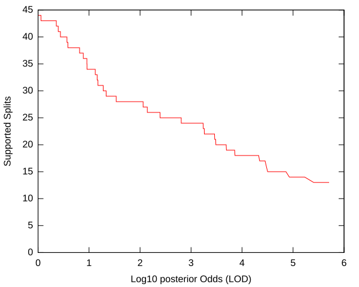
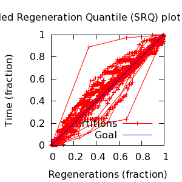
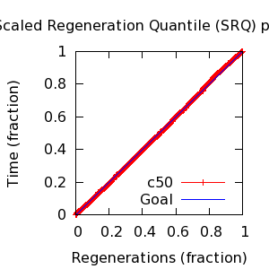
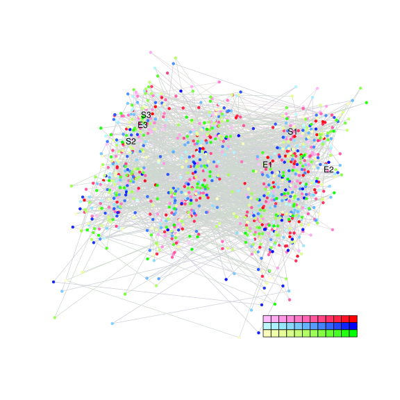
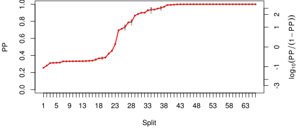
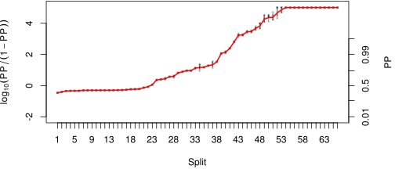

MCMC Post-hoc Analysis: 68 sequences
| Partition | Sequences | Lengths | Alphabet | Substitution Model | Indel Model | Scale Model |
|---|
| 1 |
ITS1-trimmed.fasta |
198 - 210 |
DNA | TN[~logNormal[log[2],0.25],~logNormal[log[2],0.25]]+F[~DirichletOn[letters[A],1]] + DP[~Dirichlet[n,2],~Dirichlet[n,3],3] |
RS07[~Laplace[-4,0.707],Add[1,~Exponential[10]]] |
~ Gamma[0.5,2] |
| 2 |
5.8S.fasta |
15 - 16 |
DNA | TN[~logNormal[log[2],0.25],~logNormal[log[2],0.25]]+F[~DirichletOn[letters[A],1]] |
none |
~ Gamma[0.5,2] |
| 3 |
ITS2-trimmed.fasta |
154 - 159 |
DNA | TN[~logNormal[log[2],0.25],~logNormal[log[2],0.25]]+F[~DirichletOn[letters[A],1]] + DP[~Dirichlet[n,2],~Dirichlet[n,3],3] |
RS07[~Laplace[-4,0.707],Add[1,~Exponential[10]]] |
~ Gamma[0.5,2] |
| topology | ~ uniform on tree topologies |
| branch lengths | ~ iid[num_branches[T],Gamma[0.5,Div[2,num_branches[T]]]] |
command line: bali-phy -c ITS.txt --name ITS-3.0
directory: /gpfs/fs0/data/wraycompute/br51/Work/3.0
| chain # | burnin | subsample | Iterations (remaining) | subdirectory |
|---|
| 1 |
9658 |
1 |
86930 |
ITS-3.0-1 |
| 2 |
9658 |
1 |
95183 |
ITS-3.0-2 |
| 3 |
9658 |
1 |
92021 |
ITS-3.0-3 |
| 4 |
9658 |
1 |
92542 |
ITS-3.0-4 |
| 5 |
9658 |
1 |
93173 |
ITS-3.0-5 |
| P(data|M) = -2998.675 +- 0.317
|
Complete sample: 508331
topologies |
95% Bayesian credible interval: 482915 topologies |

| Partition support: Summary |
| Partition support graph: SVG |
Partition 1
|
|
|
Diff |
|
Min. %identity |
# Sites |
Constant |
Informative |
| Initial |
FASTA |
HTML |
Diff |
|
68.9% |
223 |
93 (41.7%) |
93 (41.7%) |
| Best (WPD) |
FASTA |
HTML |
|
AU |
70.1% |
242 |
94 (38.8%) |
96 (39.7%) |
Partition 2
|
|
|
Diff |
|
Min. %identity |
# Sites |
Constant |
Informative |
| Initial |
FASTA |
HTML |
|
|
68.8% |
16 |
4 (25%) |
5 (31.2%) |
Partition 3
|
|
|
Diff |
|
Min. %identity |
# Sites |
Constant |
Informative |
| Initial |
FASTA |
HTML |
Diff |
|
74.4% |
172 |
77 (44.8%) |
75 (43.6%) |
| Best (WPD) |
FASTA |
HTML |
|
AU |
78.6% |
171 |
81 (47.4%) |
62 (36.3%) |


- Partition uncertainty
- SRQ plot: partitions
- SRQ plot: c50
- Variation in split frequency estimates
| burnin (scalar) | ESS (scalar) | ESS (partition) | ASDSF | MSDSF | PSRF-CI80% | PSRF-RCF |
|---|
| 1450 | 3373 | 616.818 | 0.002 | 0.027
| 1 | 1.006 |
Projection of RF distances for the first 3 chains 3D | Variation of split PPs across chains
 |
| Statistic | Median | 95% BCI | ACT | ESS | burnin | PSRF-CI80% | PSRF-RCF |
|---|
| prior |
-92.06 |
(-144.6, -41.83) |
15.4 |
29870 |
373
|
0.9999 | 1.001
|
| prior_A1 |
-404.8 |
(-435.1, -379.3) |
5.871 |
78331 |
390
|
1 | 0.9997
|
| prior_A3 |
-198.9 |
(-223.3, -180.9) |
25.51 |
18024 |
295
|
1 | 0.9942
|
| likelihood |
-2967 |
(-2998, -2936) |
22.67 |
20281 |
211
|
1 | 0.9972
|
| logp |
-3059 |
(-3105, -3013) |
5.349 |
85980 |
392
|
1 | 1.001
|
| Heat.beta |
1 |
| | | | | |
| Scale[1] |
1.12 |
(0.8318, 1.466) |
1.265 |
363596 |
183
|
0.9999 | 0.9994
|
| Scale[2] |
0.07911 |
(0.03664, 0.1333) |
1 |
459866 |
123
|
0.9999 | 0.999
|
| S1/F:pi[A] |
0.1845 |
(0.1555, 0.2149) |
3.48 |
132161 |
297
|
0.9999 | 1.004
|
| S1/F:pi[G] |
0.2713 |
(0.2367, 0.3071) |
3.602 |
127656 |
285
|
1 | 1.002
|
| S1/F:pi[T] |
0.2302 |
(0.199, 0.262) |
3.445 |
133493 |
306
|
0.9999 | 1.002
|
| S1/F:pi[C] |
0.313 |
(0.2779, 0.3491) |
3.315 |
138732 |
283
|
0.9997 | 1.006
|
| S1/TN:kappaPyr |
3.982 |
(3.072, 5.005) |
2.155 |
213432 |
282
|
1 | 1.003
|
| S1/TN:kappaPur |
2.704 |
(2.003, 3.502) |
1.727 |
266294 |
217
|
0.9999 | 1.001
|
| S1/DP:frequencies[1] |
0.4475 |
(0.179, 0.6578) |
9.864 |
46620 |
320
|
1 | 0.9948
|
| S1/DP:frequencies[2] |
0.2692 |
(0.06381, 0.4903) |
5.011 |
91772 |
213
|
0.9997 | 1.001
|
| S1/DP:frequencies[3] |
0.3013 |
(0.08566, 0.4629) |
8.694 |
52897 |
152
|
0.9999 | 0.9996
|
| S1/DP:rates[1] |
0.05261 |
(0.01177, 0.1015) |
7.359 |
62488 |
431
|
0.9997 | 1.001
|
| S1/DP:rates[2] |
0.2364 |
(0.08069, 0.4346) |
12.47 |
36876 |
234
|
1 | 0.9945
|
| S1/DP:rates[3] |
0.7149 |
(0.5049, 0.8545) |
11.62 |
39582 |
299
|
1 | 0.9957
|
| S2/F:pi[A] |
0.2448 |
(0.1814, 0.3103) |
2.719 |
169103 |
223
|
1 | 0.9981
|
| S2/F:pi[G] |
0.2452 |
(0.1823, 0.3107) |
2.749 |
167282 |
173
|
1 | 1.005
|
| S2/F:pi[T] |
0.2656 |
(0.2017, 0.3332) |
2.658 |
173041 |
144
|
1 | 1.001
|
| S2/F:pi[C] |
0.2406 |
(0.1799, 0.3065) |
2.727 |
168611 |
208
|
1 | 1.002
|
| S2/TN:kappaPyr |
2.762 |
(1.63, 4.165) |
1.034 |
444904 |
112
|
1 | 1.001
|
| S2/TN:kappaPur |
1.814 |
(1.059, 2.756) |
1.024 |
449021 |
136
|
0.9999 | 0.9965
|
| I1/RS07:meanIndelLength |
1.268 |
(1.118, 1.461) |
1.724 |
266761 |
232
|
1 | 1.001
|
| I1/RS07:logLambda |
-2.195 |
(-2.535, -1.875) |
2.081 |
220995 |
335
|
1 | 1.001
|
| I2/RS07:meanIndelLength |
1.096 |
(1.002, 1.276) |
4.736 |
97099 |
193
|
1 | 1.001
|
| I2/RS07:logLambda |
-2.705 |
(-3.18, -2.261) |
3.438 |
133744 |
267
|
0.9998 | 1.002
|
| |A1| |
242 |
(239, 246) |
101.7 |
4522 |
1383 |
0.8 | 0.9956
|
| #indels1 |
52 |
(47, 56) |
4.592 |
100136 |
472 |
0.8333 | 1.001
|
| |indels1| |
65 |
(59, 71) |
6.208 |
74072 |
376 |
0.8974 | 0.9992
|
| #substs1 |
210 |
(204, 215) |
43.48 |
10577 |
127 |
0.8571 | 0.9978
|
| #substs2 |
12 |
(12, 12) |
1.121 |
410171 |
5 |
1 | 1
|
| |A3| |
171 |
(169, 173) |
111 |
4142 |
553 |
0.6667 | 0.995
|
| #indels3 |
25 |
(22, 28) |
22.01 |
20895 |
178 |
0.75 | 0.9973
|
| |indels3| |
26 |
(23, 30) |
13.44 |
34217 |
211 |
0.75 | 0.9939
|
| #substs3 |
154 |
(149, 159) |
11.6 |
39644 |
353 |
0.8571 | 0.9997
|
| Scale1*|T| |
1.102 |
(0.9469, 1.267) |
1.883 |
244201 |
174
|
1 | 1.001
|
| Scale2*|T| |
0.07783 |
(0.03859, 0.1251) |
1.03 |
446443 |
113
|
1 | 0.9972
|
| |A| |
430 |
(426, 434) |
136.3 |
3373 |
1450 |
0.7692 | 0.9936
|
| #indels |
79 |
(73, 84) |
12.37 |
37171 |
395 |
0.875 | 0.999
|
| |indels| |
94 |
(87, 101) |
11.6 |
39634 |
443 |
0.9375 | 0.9982
|
| #substs |
377 |
(369, 384) |
27.46 |
16744 |
502 |
0.9 | 0.9968
|
| |T| |
0.9842 |
(0.7571, 1.23) |
1 |
459866 |
85
|
1 | 1.001
|
{kind=link}
{kind=link}
{kind=link}
{kind=link}
{kind=link}
{kind=link}
{kind=link}
{kind=link}
{kind=link}
{kind=link}
{kind=link}
{kind=link}